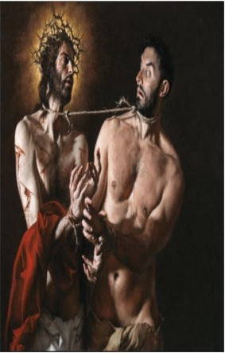

Why in the world would Pilate release an insurrectionist on the eve of Passover? There is no external attestation of such a process. Also, his name seems a bit too generic: Bar-abbas - ‘son of the father.’ This seems to be an attempt to further inculpate the Jews in Jesus’ death.

27:15 Now at that feast the governor was wont to release unto the people a prisoner, whom they would. 27:16 And they had then a notable prisoner, called Barabbas. 27:17 Therefore when they were gathered together, Pilate said unto them, Whom will ye that I release unto you? Barabbas, or Jesus which is called Christ? 27:18 For he knew that for envy they had delivered him. 27:19 When he was set down on the judgment seat, his wife sent unto him, saying, Have thou nothing to do with that just man: for I have suffered many things this day in a dream because of him. 27:20 But the chief priests and elders persuaded the multitude that they should ask Barabbas, and destroy Jesus. 27:21 The governor answered and said unto them, Whether of the twain will ye that I release unto you? They said, Barabbas. 27:22 Pilate saith unto them, What shall I do then with Jesus which is called Christ? They all say unto him, Let him be crucified. 27:23 And the governor said, Why, what evil hath he done? But they cried out the more, saying, Let him be crucified. 27:24 When Pilate saw that he could prevail nothing, but that rather a tumult was made, he took water, and washed his hands before the multitude, saying, I am innocent of the blood of this just person: see ye to it. 27:25 Then answered all the people,and said, His blood be on us, and on our children. 27:26 Then released he Barabbas unto them: and when he had scourged Jesus, he delivered him to be crucified.
~~~~~~~